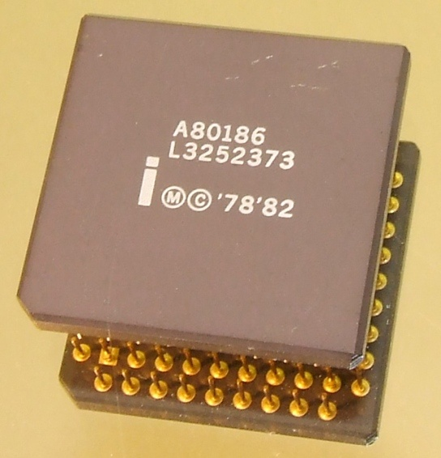

Описание товара
Краткое описание товара
Производство: с 1982 по 2007
Производители: Intel Corp., AMD, Siemens AG, Fujitsu
Частота ЦП: 6-25 МГц
Наборы инструкций x86-16
Intel 80186 (встречаются обозначения «186», «i186») — 16-битный микропроцессор, выпущенный компанией Intel во второй половине 1982 года, и представляющий собой усовершенствованный вариант микропроцессора Intel 8086. В состав нового микропроцессора вошли средства, которые ранее реализовывались 10 отдельными микросхемами.
Характеристики товара
В 1982 году Intel выпускает встраиваемый процессор Intel 80186, который, помимо улучшенного ядра Intel 8086, содержал также дополнительные модули, заменяющие некоторые микросхемы поддержки; процессор производился с использованием NMOS-технологии.
Подробное описание товара:
- Тактовая частота: 6, 8, 10, 12, 13, 16, 20, 25 МГц
- Разрядность шины данных: 16 бит
- Разрядность шины адреса: 20 бит
- Объём адресуемой памяти: 1 Мбайт
- Память команд (ПЗУ/ROM): ?
- Объём адресуемой памяти (ОЗУ/RAM): ?
- Количество транзисторов: 134 000
- Напряжение питания: 2,9-3,3 В
- Количество инструкций: ?